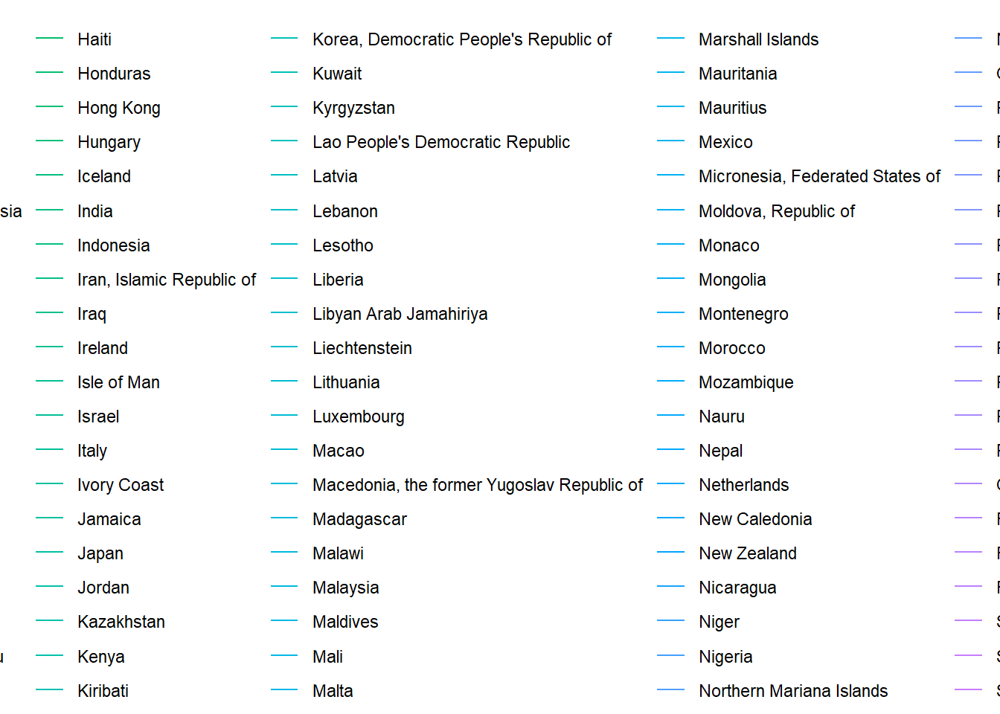
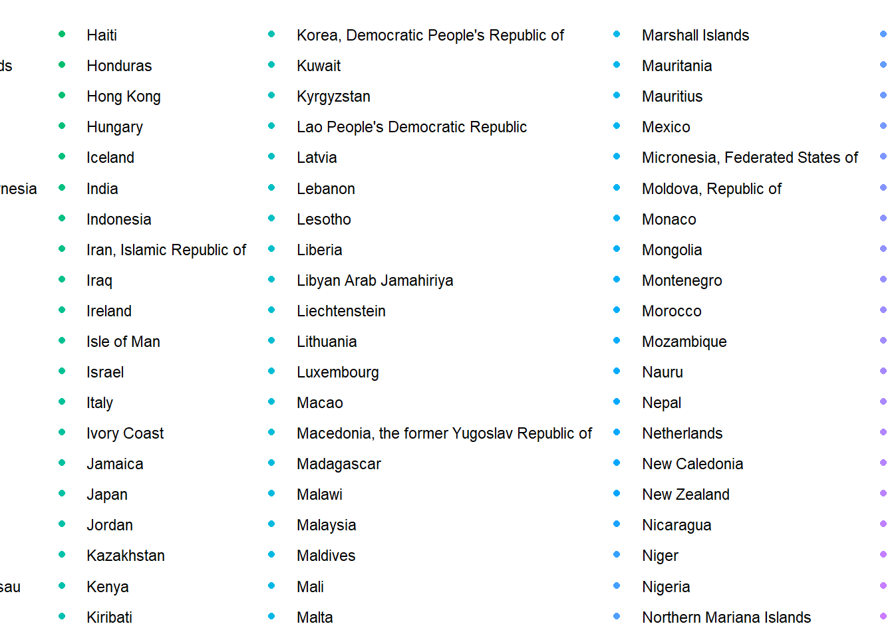
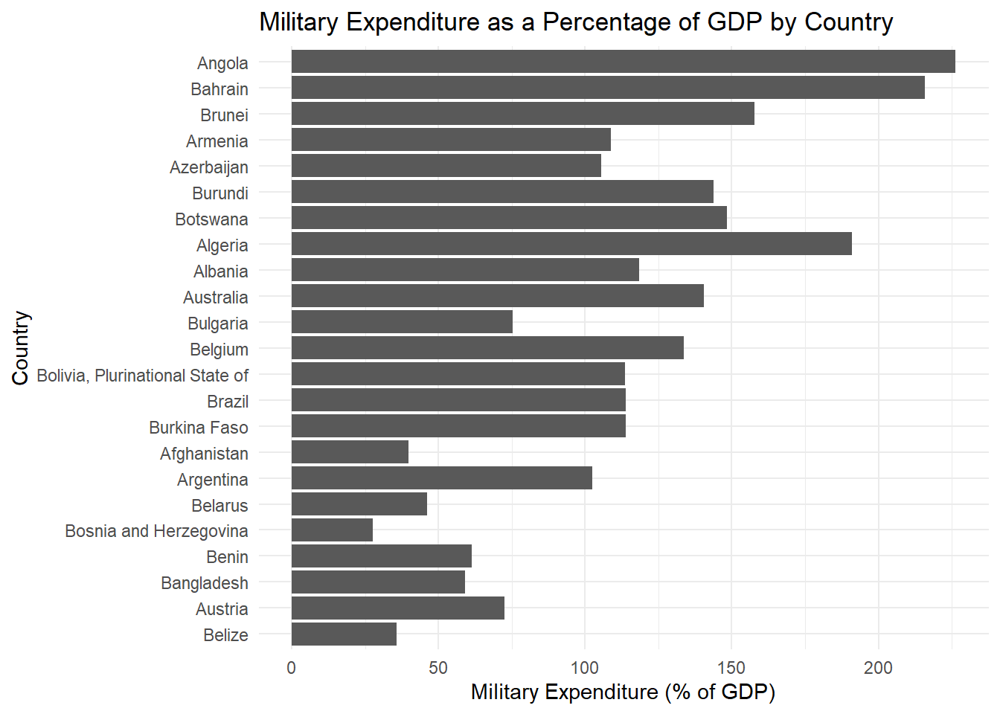
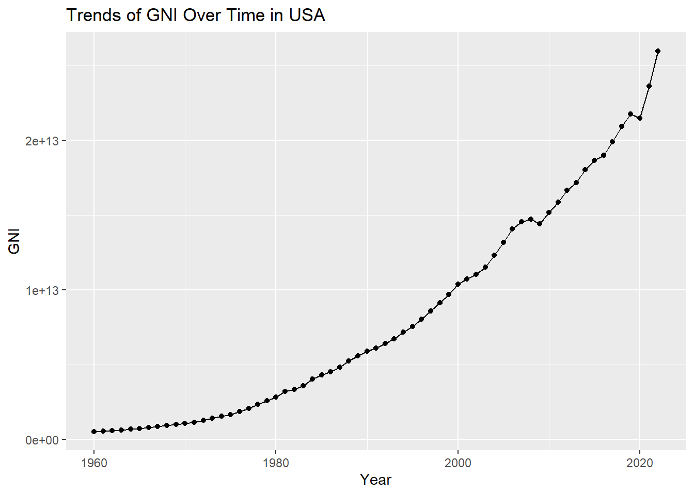

data <- read.csv('unicef_metadata.csv')UNICEF Metadata Analysis
Introduction
This report analyzes various indicators from the UNICEF metadata, such as population, GDP per capita, GNI, inflation rates, life expectancy, and military expenditure across different countries and years.
Data Loading
Summary Statistics
summary(data) country alpha_2_code alpha_3_code numeric_code
Length:13293 Length:13293 Length:13293 Min. : 4.0
Class :character Class :character Class :character 1st Qu.:212.0
Mode :character Mode :character Mode :character Median :426.0
Mean :429.6
3rd Qu.:646.0
Max. :894.0
year Population..total GDP.per.capita..constant.2015.US..
Min. :1960 Min. :4.582e+03 Min. : 122.9
1st Qu.:1975 1st Qu.:5.677e+05 1st Qu.: 1352.5
Median :1991 Median :4.452e+06 Median : 3855.8
Mean :1991 Mean :2.558e+07 Mean : 12080.7
3rd Qu.:2007 3rd Qu.:1.436e+07 3rd Qu.: 14982.6
Max. :2022 Max. :1.417e+09 Max. :228667.9
NA's :30 NA's :3291
GNI..current.US.. Inflation..consumer.prices..annual...
Min. :9.123e+06 Min. : -17.640
1st Qu.:1.612e+09 1st Qu.: 2.135
Median :9.118e+09 Median : 4.872
Mean :2.078e+11 Mean : 23.617
3rd Qu.:5.906e+10 3rd Qu.: 10.257
Max. :2.598e+13 Max. :23773.132
NA's :3727 NA's :4797
Life.expectancy.at.birth..total..years. Military.expenditure....of.GDP.
Min. :11.99 Min. : 0.000
1st Qu.:57.43 1st Qu.: 1.187
Median :67.31 Median : 1.886
Mean :64.55 Mean : 2.717
3rd Qu.:72.89 3rd Qu.: 3.155
Max. :85.50 Max. :117.350
NA's :770 NA's :5771 Life Expectancy Over Years by Country
ggplot(data, aes(x = year, y = Life.expectancy.at.birth..total..years., group = country, color = country)) +
geom_line() +
labs(title = "Life Expectancy Over Years by Country", x = "Year", y = "Life Expectancy") +
theme_minimal()Warning: Removed 744 rows containing missing values or values outside the scale range
(`geom_line()`).
GDP per Capita Scatter Plot
ggplot(data, aes(x = Population..total, y = GDP.per.capita..constant.2015.US..)) +
geom_point(aes(color = country)) +
labs(title = "GDP per Capita vs. Population", x = "Population", y = "GDP per Capita (constant 2015 US$)") +
theme_minimal()Warning: Removed 3291 rows containing missing values or values outside the scale range
(`geom_point()`).
Military Expenditure as a Percentage of GDP by Country
data[1:2000,] %>%
filter(!is.na(Military.expenditure....of.GDP.)) %>%
ggplot(aes(x = reorder(country, Military.expenditure....of.GDP.), y = Military.expenditure....of.GDP.)) +
geom_bar(stat = "identity") +
coord_flip() +
labs(title = "Military Expenditure as a Percentage of GDP by Country", x = "Country", y = "Military Expenditure (% of GDP)") +
theme_minimal()
usa_data <- subset(data, country == 'United States')
ggplot(usa_data, aes(x=year, y=GNI..current.US.., group=1)) +
geom_line() +
geom_point() +
labs(title="Trends of GNI Over Time in USA", x="Year", y="GNI")
Findings
Discuss the findings from the visualizations and summary statistics here.
Conclusion
Provide the concluding remarks for the report here.